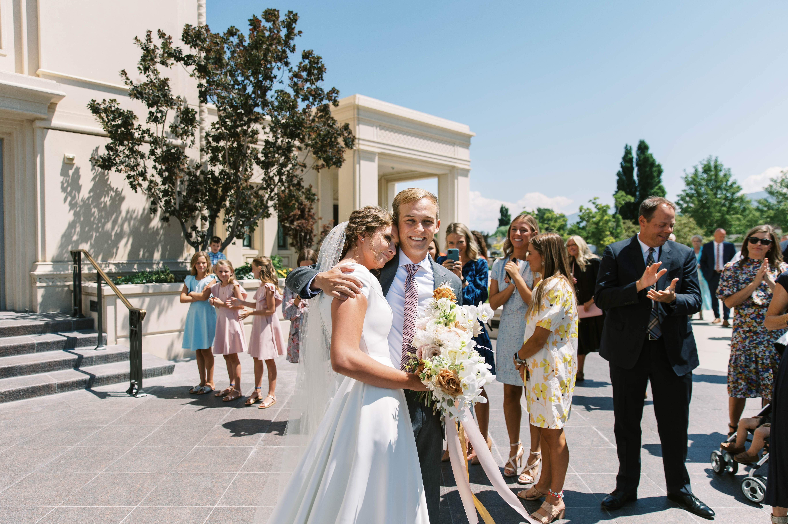
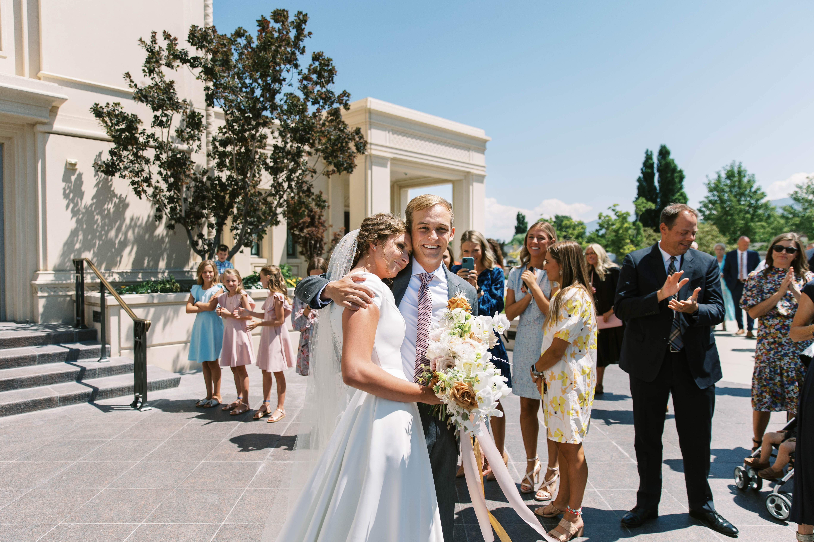
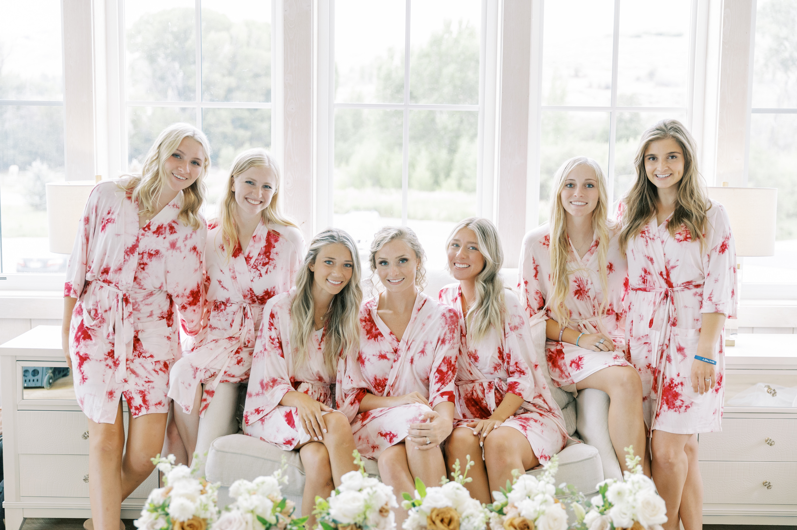
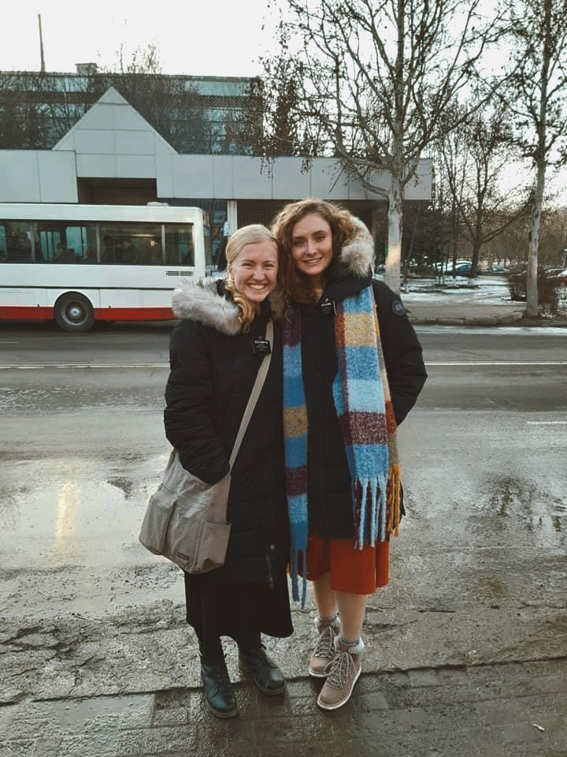

Ellie spent most of her childhood in Boston, Massachusetts; however, she claims Texan as she spent her more formative high-school years in Dallas. She is the eldest of the seven children in her family, and values her many years as the designated babysitter, chauffeur, and family tutor.
After graduating from Southlake Carroll High School in 2018, Ellie moved to Provo, Utah and began college at Brigham Young University. She completed my first year at BYU then deferred her enrollment to serve as a missionary for her church. Ellie's service mission was split between two countries, Ukraine and Moldova, both of which now hold a special place in her heart.
Upon returning from Eastern Europe, Ellie took my place back at BYU. She has since married the best man she's ever known, and the two of them are enjoying this phase of life together. Ellie has always been blessed, and she continues to find joy daily. Oftentimes, that joy is found on the ski mountain, but during the summers she will settle for any sporting competition against her younger brothers.
Ellie cherishes learning experiences and is passionate about people and about building companies. Included below are pictures of Ellie's favorite people and memories.
After graduating from Southlake Carroll High School in 2018, Ellie moved to Provo, Utah and began college at Brigham Young University. She completed my first year at BYU then deferred her enrollment to serve as a missionary for her church. Ellie's service mission was split between two countries, Ukraine and Moldova, both of which now hold a special place in her heart.
Upon returning from Eastern Europe, Ellie took my place back at BYU. She has since married the best man she's ever known, and the two of them are enjoying this phase of life together. Ellie has always been blessed, and she continues to find joy daily. Oftentimes, that joy is found on the ski mountain, but during the summers she will settle for any sporting competition against her younger brothers.
Ellie cherishes learning experiences and is passionate about people and about building companies. Included below are pictures of Ellie's favorite people and memories.
Ellie and Preston. Married in July of 2021.
 .  .
.  . 
Ellie's family isn't one for many family pictures, but she did manage to get them all together on her wedding day.
 .
.
Ellie's support group and adventure team. The best friends ever.
 . 
A glimpse into Ellie's mission in Ukraine and Moldova.
 . 
Back to top